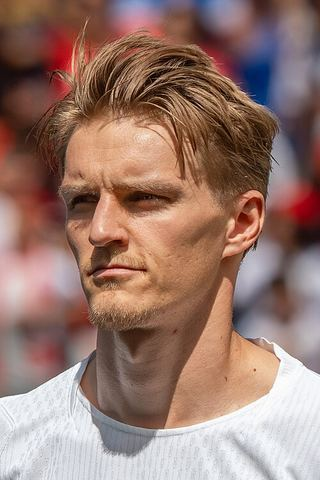

Ezzcoins › Player pages › Martin Ødegaard
86
CM

Ødegaard
PAC65
SHO78
PAS88
DRI87
DEF66
PHY63
Photo (cropped): Bryan Berlin · CC BY-SA 4.0 · Wikimedia Commons
Photo source
https://commons.wikimedia.org/wiki/File:Martin_Odegaard_Morocco_v_Norway_7_June_2026-56_(cropped).jpg
Licence: https://creativecommons.org/licenses/by-sa/4.0
Martin Ødegaard
86 CM · Arsenal · Premier League ·  Norway
Norway
No console price yet. Cards rated 84 or higher are priced in turns through the day.
83Meta rating · CM −3 vs overall · CAM 83
PAC65
SHO78
PAS88
DRI87
DEF66
PHY63
- Position
- CM (also CAM)
- Club
- Arsenal
- League
- Premier League
- Nation
- Norway
- Skill moves
- 5★
- Weak foot
- 2★
- Preferred foot
- Left
- PlayStyles+
- Incisive Pass+
Meta rating: Ezzcoins' own estimate of how well this card plays in game, worked out from its stats for each position it can play, its skill moves, weak foot and PlayStyle+. An average card scores about its overall rating; higher means it plays above its rating.
Watch on EzzcoinsMartin Ødegaard's special cards
More from Arsenal
- 89
 GabrielCB
GabrielCB - 89
 MarionaCM
MarionaCM - 88
 Alessia RussoST
Alessia RussoST - 88David RayaGK
- 88Declan RiceCDM
- 88
 William SalibaCB
William SalibaCB - 87Bukayo SakaRW
- 87Ona BatlleRB